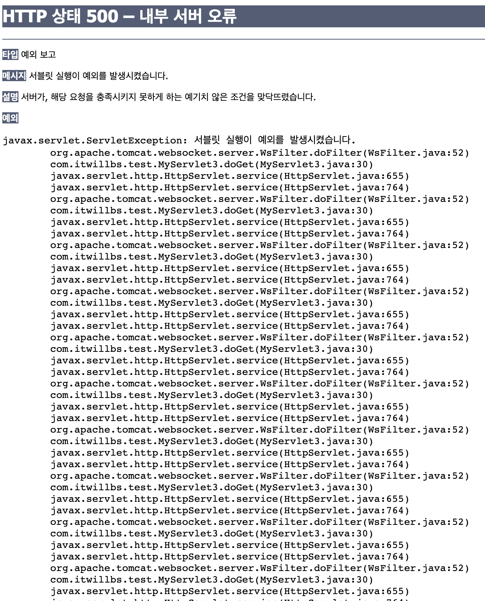

에러해결 Log) cvc-id.3 A field of identity constraint ‘web-app-filter-name-uniqueness’ matched element ‘web-app’, but this element does not have a simple type.
사용환경
- MacBook Air (M1, 2020) 16GB
- JDK 8
- Eclipse 2021-12
- tomcat 8
에러의 발생

JSP수업 중 서블릿 실습을 따라하고 있었는데 분명 방금 전 까지는 실행이 잘 됐는데 새 서블릿 클래스를 만들고 나서 서버를 재시작 하니까 갑자기 무한루프가 돌기 시작했다… 그래서 급히 구글 검색했지만 딱히 만족할만한 결과를 얻지 못해서.xml파일을 뒤져봤다.

- 사진에서 17번째 줄에 에러 메시지가 표시되고 있지만 저건 처음부터 저랬는데도 실행하는데 아무 문제가 없었어서 그냥 이클립스 버그인가 보다 하고 넘겼었다.
- 심지어 오늘 수업에서 직전까지 하던 실습을 할 때 까지도 잘 됐었음! 그런데 다른 파일들은 에러가 날 만한 부분이 없었고 계속 저기만 문제라고 하고 있어서 에러 메시지를 눌러보았다.

- 눌러보니까 굉장히 긴 메시지가 나오길래 혹시나 싶어서 그대로 복붙해서 구글에 검색해 보니까 역시 이걸 해결하신 분이 계셨다.
- 해결방법은 아주 간단했는데
.xml파일 상단의<wep-app xmlns:xsi="~"로 시작하는 부분에서 저 뒤에 있는xsi:schemaLocation="~"에 있는 주소 중http://java.sun.com부분을http://JAVA.sun.com으로 고치거나http://Java.sun.com으로 고치면 되는.. 아주 간단한 것이었다.

- 바꾸니까 17번째 줄의 에러 메시지도 사라지고 더 이상 무한루프를 돌지 않고 서블릿 실행도 잘 되었다.
- 이럴거면 처음에 자동으로 만들어 줄 때 부터 자바를 대문자로 써서 만들어 주면 되지 않았을까… 사람 번거롭게 하네 😔